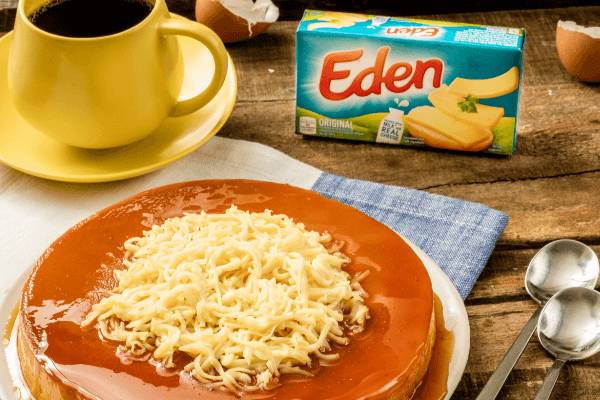

Leche Plan Recipes

Description
Leche Flan or Creme Caramel is a Filipino dessert made with
egg yolks, milk, sugar, and vanilla extract.
It is steamed in small baking pan called Llanera.
Ingredients
- 8 TABLESPOONS SUGAR
- 230 GRAMS EDEN MELT SARAP, SLIGHTLY MELTED
- 5 PIECES EGGS
- 1 CAN EVAPORATED MILK
- 1 CAN CONDENSED MILK
- 1/2 CUP EDEN ORIGINAL, SHREDDED
Steps
- Put the sugar in a large llanera.
Place over low heat until the sugar
has melted and golden.
- Occasionally move the llanera to avoid burning and
to distribute sugar evenly.
Remove from heat and allow it to harden.
- In a bowl, beat Eden Melt Sarap until smooth.
Add eggs one at a time.
Make sure to beat the mixture after each egg is added
- Add evaporated milk and condensed milk. Mix well.
Once thoroughly mixed, let the mixture sit for a few minutes.
- Cover llanera with foil and place in a baking dish with 1-inch water.
Bake for 375F for 1 hour or until a toothpick
inserted into the leche flan comes out clean.
Remove from oven and allow to cool.
- Turn leche flan over on a serving dish.
Top with shredded Eden cheese and enjoy!